Activity: Place holes
This activity demonstrates the process of placing holes in a conveyor belt hanger.
In this activity you will:
-
Place holes dynamically.
-
Use precise methods to locate holes.
-
Add dimensions to existing holes.
Click here to download the activity file.
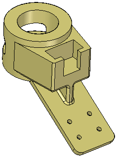
-
Open holes.par.
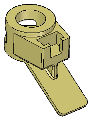
On the Home tab→Solids group, choose the Hole command .
On the Hole command bar, click the Options button.
Define the hole type. On the Hole Options dialog box, click the Simple hole  button.
button.
Set the Standard to ISO Metric.
Set the Sub type to Dowel.
Select 10 mm from the Size drop list, and then click OK.
Drag the cursor over the part's flange and click to place a hole at the approximate location shown.
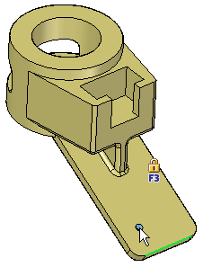
Do not exit out of the hole command. You will continue placing holes.
While still in the Hole command, press the F3 key to lock the plane. Place your cursor over the right edge and type E to obtain a dimension from the hole center to the edge endpoint. Repeat for the bottom edge (do not click in between selecting these edges).
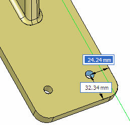
Type 25 for the dimension to the right edge. Press Tab. Type 35 for the bottom value. Press Tab.
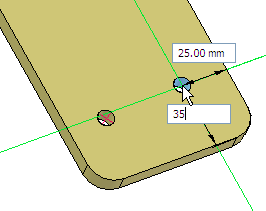
Place your cursor over the edge of the second hole and type C to obtain a dimension from that hole's center point. Also, hover the cursor over the bottom edge and type E. Drag your cursor vertically from the second hole and type 0 for the distance. Press Tab and type 75 to define the distance from the bottom edge. Press Tab.
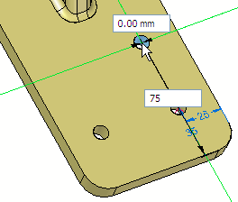
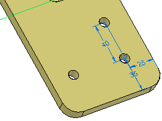
Do not exit out of the hole command.
Place the fourth hole as shown.
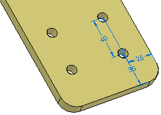
Choose the Home tab→Dimensions group→Distance Between command . On the command bar, click the Lock Dimension Plane option
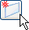
.You are prompted to select a plane.
Select the flange face shown.
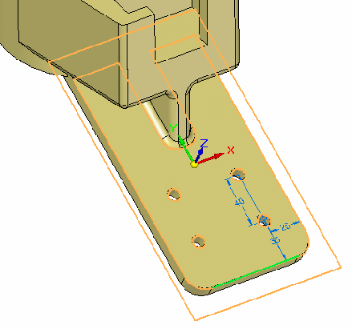
Select the left edge and the center of the upper-left hand hole.
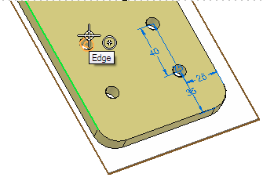
Place the dimension. Change it to 25 mm (ensure the arrow points toward the right).
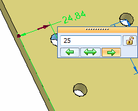
Create another dimension between the bottom edge and the hole center. Change it to 75 mm.
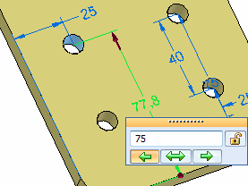
Repeat for the lower left hand hole, changing to 35 mm from the bottom edge and 25 mm from the left edge.
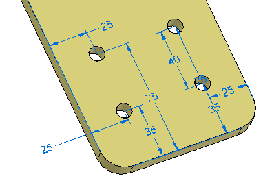
Use the Smart Dimension command to place diameters on the four holes.
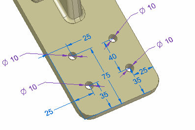
The purple dimension denotes that it is a driven dimension. To edit the hole, you must select the hole feature and edit the hole properties.
Save and close the part file.
In this activity you learned how to place hole features on a solid model. You learned how to place holes with precision input using shortcut keys to dimension to geometric keypoints.
-
Click the Close button in the upper-right corner of this activity window.